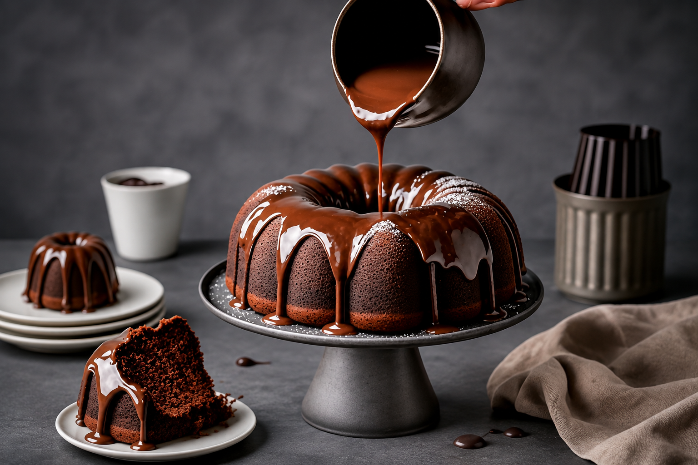

Sugira uma Receita
Categorias de Receitas
- Receitas doces
- Receitas salgadas
- Receitas saudáveis
Receita e tempo de preparo
| Receita | Tempo de Preparo |
|---|---|
| Bolo de chocolate | 45 minutos |
| Panqueca caseira | 30 minutos |
| Salada de frutas | 15 minutos |
Comparação dos tempos de preparo
Tempo de preparo das receitas, em minutos.
Inspirações Culinárias
conheça outras no site .Tudogostoso

Vídeo: preparo de bolo de chocolate
Veja uma etapa do preparo de um bolo de chocolate.